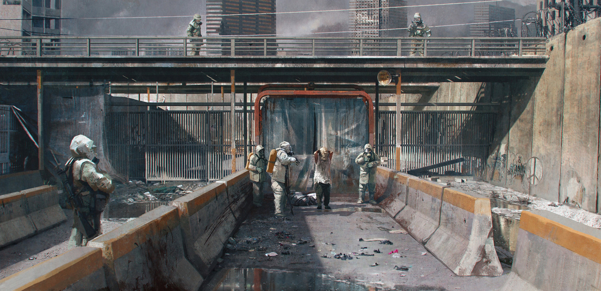
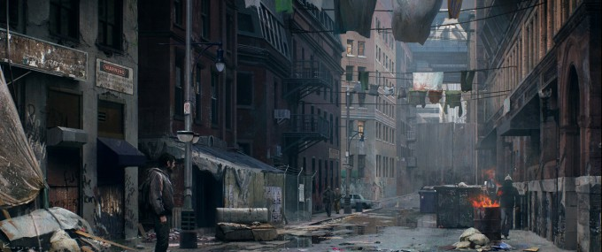

Everything happens for a reason.
The story begins with a grizzled and jaded man named Joel Miller 20 years after experiencing both the start of the apocalypse and the loss of a loved one. He is surviving with a woman by the name of Tess, they are essentially smugglers and bounty hunters of sorts. After doing business with a man named Robert, Robert betrays them and steals their merchandise hoping to sell it to the Fireflies. The Fireflies are a militia group fighting back against military control and are looking for a cure to the Cordyceps virus that has ravaged the world.

After confronting Robert, his men, and what's left of the military, Joel and Tess run into the leader of the Fireflies; Marlene. She is hurt pretty badly and promises to get them their merchandise back if they help her smuggle something out of the city. With really no other options they decide to help her and eventually they reach a safehouse where they discover what they're going to have to smuggle is a person. The person is a young girl named Ellie, who besides being young, isn't too wildy different from most people in the quarantine zone. Initially they are confused but they know if they do this, they can get back to their daily routine so they agree.
After hiding from the military and reaching another safehouse at the end of a smuggle route, the three of them run into some heavy military resistance. They are forced to fight them and find out that Ellie is infected with the Cordyceps virus. Thinking Marlene set them up, Ellie explains to them that she has had the bite for three weeks now. This is completely impossible since anyone who is infected turns in mere days. The only logical reasoning to why Ellie hasn't succumbed to the effects of the virus is because she's immune. Realistically both Joel and Tess don't believe it, however before they can form a plan, are once again interrupted by the military and have to escape.

Eventually after a lot of running, fighting infected, and fighting the military Tess convinces Joel to take Ellie to St. Mary's Hospital in Salt Lake City and to give her to the Fireflies. The reason Marlene wanted them to smuggle Ellie out of the city and to the hospital is because she knew there would be a chance at making a cure. Joel reluctantly agrees and the rest of the game is about Joel and Ellie's journey to the hospital, the people they meet along the way, and the many experiances and situations they are faced with.